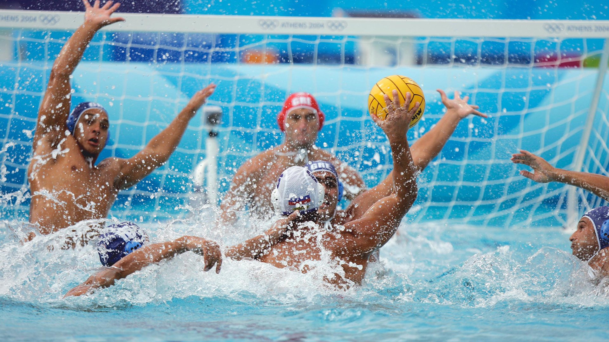
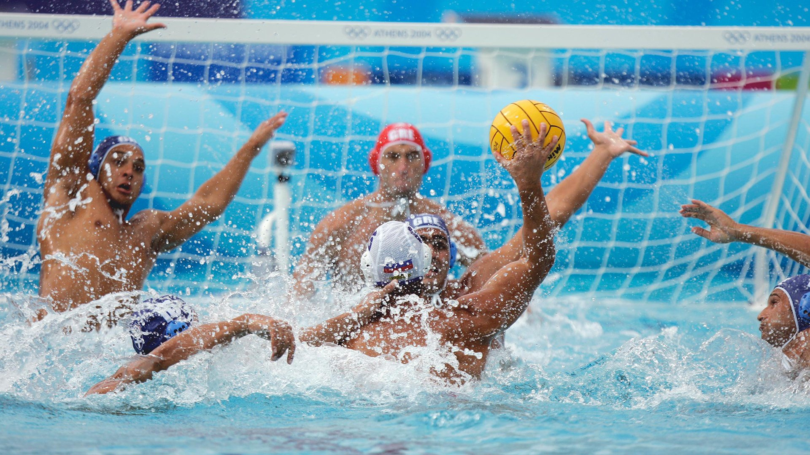
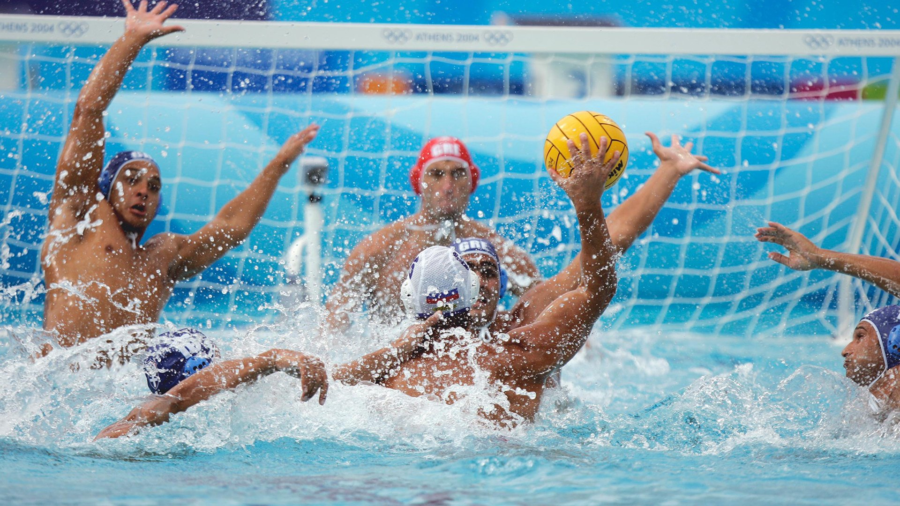

⬆

Во́дне по́ло, ватерпо́ло (англ. Water polo) — командна спортивна гра в воді, в процесі якої спортсмени двох команд прагнуть закинути м'яч у ворота суперника і не пропустити у свої.
У грі беруть участь по 7 осіб від кожної команди (6 польових та 1 воротар), всього в команді — 11-13 осіб. Грають 4 періоди по 8 хвилин чистого часу з двохвилинними перервами. Дозволяється плавати будь-яким способом, вести і кидати м'яч однією рукою (двома руками грає тільки воротар). Порушення правил карається передачею м'яча супернику, видаленням або 5-метровим штрафним кидком.
У 1926 при Міжнародної аматорської федерації плавання (ФІНА) було створено Комітет з водного поло, що об'єднує 155 федерацій (1998).
Водне поло є олімпійським видом спорту. У 1900 році водне поло було включено в програму Олімпійських ігор. Близько ста років цей вид спорту вважався суто чоловічим (попри те що жіночі ватерпольні команди розвивалися паралельно), але в 2000 році до програми Олімпіади в Сіднеї було включено жіноче водне поло.
В олімпійському турнірі країна може бути представлена однією командою. У чоловічому турнірі беруть участь 12 команд, у жіночому — 6. Відбір на Олімпійські ігри здійснюється за результатами Кубка світу і відбіркового Олімпійського турніру. Змагання проводяться в три етапи за коловою системою в двох підгрупах (по 6 команд).
У спортивному змаганні між двома командами перемога вирішується не тільки тим, наскільки гравців тієї чи іншої команди оволоділи технічними прийомами гри, але й тим, які узгоджені їх дії.
Часто вміле розташування гравців і дружна, узгоджена колективна гра приносить перемогу команді, здавалося б слабкої.
Уміння узгоджувати свої дії з діями товаришів і найефективніше використовувати особисті можливості на користь команди досягається завдяки розумінню основ тактики і досвіду в їх практичному застосуванні. Вивчаючи основні положення тактики гри у водне поло, можна розглядати окремо: Індивідуальну тактику гравців, тактику окремих груп гравців, тактику команди в цілому. Індивідуальна тактика визначає дії гравця при виконанні ним тактичної комбінації, командою, яка проводиться, в цілому. Вона будується відповідно до технічної підготовленості гравця і з урахуванням можливих дій противника.
Тактика окремих ланок команди, груп гравців визначає дії цих груп в окремі моменти гри. Тактика команди в цілому визначає розташування гравців на полі, основний план гри, способи створення вигідних положень їх використання, тактику окремих ланок команди і тактику кожного з гравців.